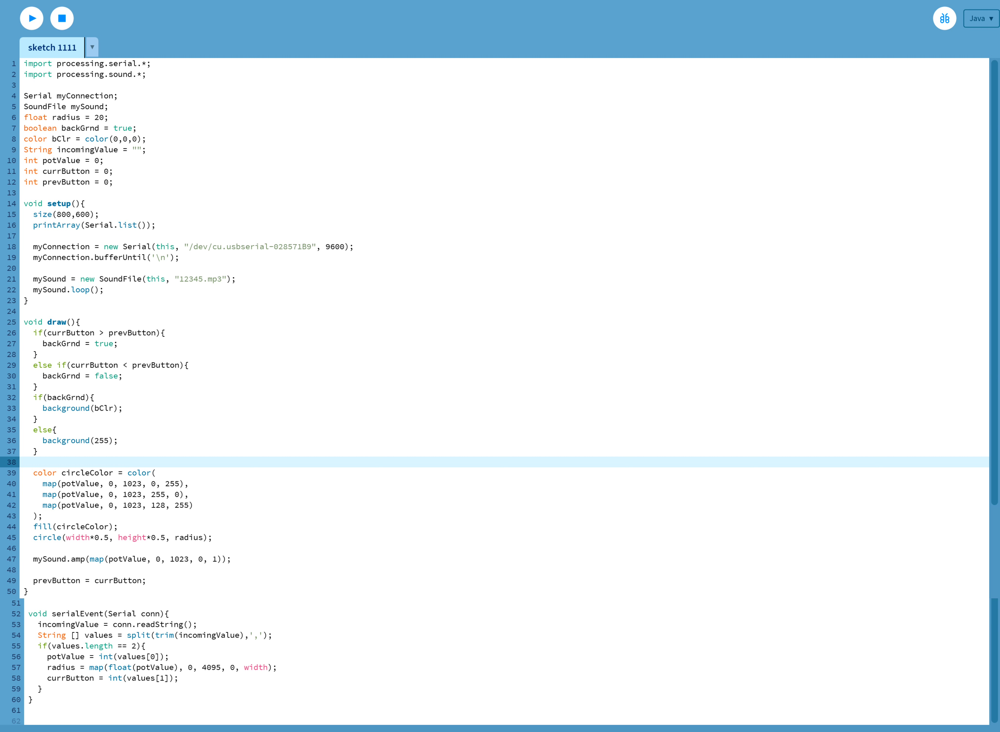
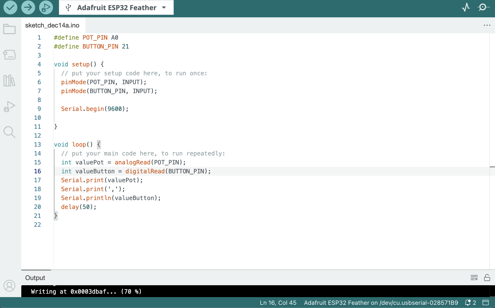

Week12 Assignment-Milti-channel controller


Based on the exercises in class, I want to add that rotating the potentiometer can change the color of the circle, and also allow the audio I add to change the volume of the sound.
Next is the video presentation